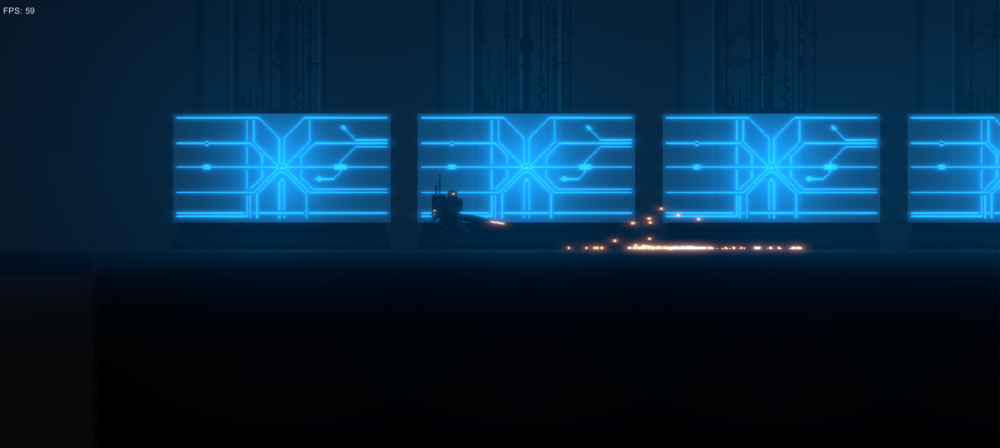
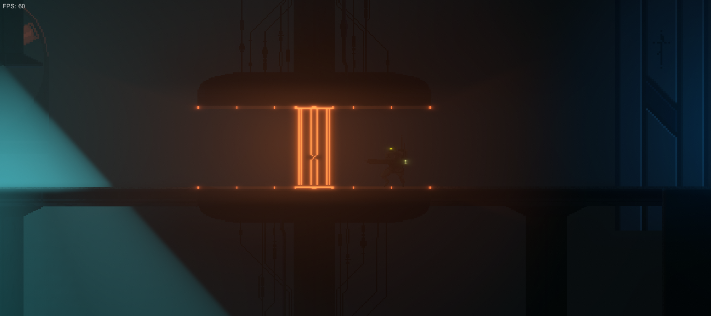
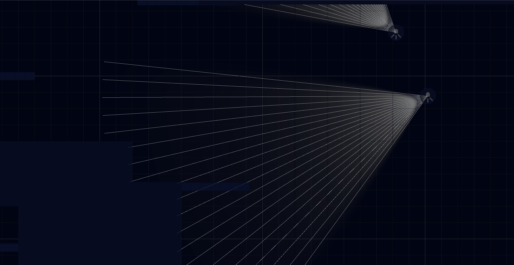

Where do we begin? Let's start off by saying that this is the first entry to our devlog covering our current project. We all have never done anything like this before so there might be some changes coming to the format, because we are still learning. On the same note, we would love to hear your suggestions about future topics or ideas on how to improve the format. Feedback is what this whole devlog is about anyways, so please don't hold back! So without any more delays, let's get right into the good stuff!
We haven't really decided on a name for the game yet so the working title is very fittingly "Tomorrow". We might have to come up with something better than that, but we'll see.. In Tomorrow you play as a Mech with different weapons, ranging from bare fists to highly advanced machine guns, and different abilities, like wall-jumping, gliding, etc., and try to barge your way through a dark and twisted world in classic 2D-Platformer style. Our current plan for the game is to make it about 2 hours long. The overall genre is very close to a Rogue-Like but we haven't yet decided on any specifics. All we know is that we want the player to be really scared of death in the game and so far we think the best way to do that is by making the player pay the ultimate price for death: A full reset and losing all progress! The visuals are going to be rather simplistic and very gloomy, with most of the atmosphere being created through sound. Most of the game takes place in an old nuclear power plant, which has once provided energy for the whole city, but has lately fallen into the grasp of some demonic creatures. We call it the arch. In addition to these creatures the arch is defended by robots designed for specific tasks needed to sustain the arch. The main gameplay loop should feel like a game of hide and seek, with the main goal being not to die. To advance in the game the player has to explore the map and find different upgrades, which are needed to access different areas of the arch. You could also describe the game as a metroidvania style game, but with the character being a lot more fragile than in most metroidvania games. We really want the player to feel insignificant compared to all the other creatures roaming the arch. This means giving the player just a few ways to fight back and give him only very few health points. The focus for the player should rather be in finding ways to dodge encounters and hide or use the layout of the environment to their advantage. Making sure that the player actually does play in this way will probably be one of the biggest challenges we have to face.
Early Progress
The idea for this game came upon us more than a year ago during a simple dinner between friends. We had been making games together for quite some time now, but we never really did anything with the results. Most of them were created during gamejams or for university projects. And we really wanted to have something we could be proud of and not just something that was there just for the sake of it. So we sat down and started brainstorming about different things we could do and soon arrived at the idea for this project. But since the scale of the project is probably way too big we agreed that it was probably best if we stick with simple ideas for mobile games. We came up with some ideas and tried to motivate ourselves for them but it seemed like we kept coming back to the idea for Tomorrow. It had just really hooked us, since we really wanted to play such a game. After about 1 week of messing around with a prototype for another game we decided, that making a game, which might be too big, is better than making a game you don't want to play.
The decision to go for the idea, which we all were really hungry for, felt really good and with what felt like a million times more motivation we started developing the idea even further. We started to create a quick game design document of about 15 pages, so that we had a base off which we could build our ideas. Soon the prototyping phase began and it all started to come together. We had a basic character-controller with jump/run/aim/fire inputs, a dynamic camera with a simple screen-shake effect and a simple version of one of the enemies. Messing around with the visuals also showed some promising results and set the right mood for the game, even if it was pretty rough around the edges.
Here are some screenshots from that phase:
 You can find more images from that time on our instagram.
After about 3 months of development we all started to get really busy with work and studying. Our bachelor's was coming up and obviously that took a lot of our time. We didn't really have the time to come back to development until around August this year. Of course we kept talking about the game and exchanging ideas but not a whole lot got done during those 9 months. But since then we have started working on the game again and are looking forward to making some progress, which is one of the reasons why we are starting this whole devlog thing. We realized that it will be really important for the quality of the game to get unbiased feedback as soon as possible. This is what we hope to achieve with this blog, plus we hope that at least some of you find it interesting to follow and be part of the development of our game.
Current Status
The last weeks have mainly been about finding our grasps again. 9 months without doing something for the project has lead to many new ideas about the game and how to achieve our goals. Those ideas are now being worked through, so that we can start building a cohesive game. Some initial ideas have been scrapped but quite a few new ideas have made it into the game. To get this blog started I am going to go over everything we have done so far and how we got there. I will also go into some technical stuff but not too much. If you want to hear more about the technical side of the project let us know and we can adjust future blog posts.
As I just mentioned the 9 month break has left its marks on the project, which is why we basically started from scratch to get everything working nicely. This meant creating a new very basic character controller. Currently you can only walk/run, jump & double jump (double jump will probably only be possible after getting an upgrade in the future), and climbing walls. When I say climbing walls I really do mean climbing and not just wall-jumping. At the moment it is quite similar to the climbing mechanic in Celeste, but it will probably change a lot in the future. By saying it is similar I really only mean that the character sticks to the wall and you can move him up and down.. Our plans for the future are to put a limit on the duration you can climb. This will probably be done with a universal "battery", which slowly depletes when climbing. We will have to implement it first and see if it does to the gameplay what we hope it does. Shooting is not implemented at all, because we really wanted to focus on the core gameplay first and shooting is not really a part of that. It will play a big role in the game but it certainly should never be the best option for the player. Expanding the players abilities is very high on our priority list for upcoming updates. One big thing concerning the movement, which we really wanted to have right away, were one-way-platforms. This is something you have seen in almost every 2D-Platformer ever. A platform which you can jump through from beneath and jump back down, by pressing the "Down"-Button. Having the possibility of using those platforms gave us much more freedom in creating our test-environments and making them much more like we want the final versions to be. We really want the player to be able to explore the world relatively freely in all 4 directions. To make this as easy as possible or at least intuitive we have some more plans for future movement abilities (e.g. climbing ropes or wall-jumping). This wraps up all the current abilities of the character controller, but as I said we are going to work on some more features in the future.
One big hurdle we have to overcome for our first playable prototype are the flying robots, which we call "Sentinel".

There are going to be many different types of sentinel, but all share the ability to fly through the air like the flying tentacle robot things in "The Matrix". I just found out that they are also called "Sentinel", I swear! Maybe my subconscious thought about those things when coming up with the idea for our sentinel. The big problem with those guys is the rather complex behaviour they are supposed to have. We currently have only been working on one of the simpler types, which we call "Scouts". They are exactly what the name says: Scouts, which patrol an area and look for enemies. They are the smallest kind of sentinel, but they are also quite nimble. Since they are rather small, at least compared to other sentinel, they are not very heavily armored and only carry simple defense/attack mechanisms. They come in small groups of about 3-4, but can also roam the arch all by themselves. Their behaviour cycle goes as follows:
- Get target location
- Move to target location, while looking for enemies
- Perform a thorough search of the target location
- Contain danger and disable enemy, if found. One sentinel should try to reach a central hub, where it can then inform the more deadly sentinel to help.
- Area is clear? Go back to 1.
This behaviour is not the most complex in the world but making it seem natural and not too predictable was still challenging, at least for us. Currently the sentinel are only represented by a circle and a cone light shining in the direction of their sight. The sight of the sentinel is another big part of their behaviour as they should constantly be looking for enemies. To achieve this we are constantly casting around 20 raycasts, to cover the visual cone.
This has to be done every frame and for each sentinel. At the moment this is not a problem for the performance and my laptop can easily handle 100s of sentinel at once, but this might change in the future. I was thinking about changing it to multiple circlecasts, which would not be as accurate but could potentially be a lot better for the performance. Right now I don't want to waste time optimizing the performance when there isn't a problem yet. The sight constantly checks for any "objects of interest", which could be anything from other robots, the demonic creatures, random debris or the player. Once an object of interest has been detected, the scout will start scanning the object and after about 2 seconds it will decide whether or not it is dangerous or not. If it is dangerous it will engage in combat, but I will come back to this later.
Navigation through the arch is achieved with a simple A* pathfinding algorithm. This makes the sentinel stick a lot to the walls though, which doesn't look very natural. It works but it doesn't look nice, which is why we are going to keep it like this for now, but will probably change it up a bit in the future. Another concern is the performance, as the arch is going to be rather expansive and complex and the sentinel should be able to move freely in almost all areas. This means that we might have to split the map into different pathfinding areas, but right now we are not even close to reaching the limits of A*. Once the scouts have all reached their target position (which by the way is the same for every scout of the pack) they start a thorough search of the area. For this I create a grid of invisible boxes, which can all be detected by the sight. These boxes are destroyed when spotted by a scout or when overlapping with anything in the environment like walls or the floors. The sentinel then all request a random box, which they are supposed to search. They then find a path to said box and scan it for about 1 second. All this repeats until every box has been seen at least once by a scout.
As I said before, once a dangerous object has been detected the scouts of the pack engage in combat. Right now they all just follow the object and try to shoot it, until it is dead. So far the only detectable object is the player. Should they loose sight of the object they start a search at the last position the object has been seen. If they still cannot find the player they carry on by getting a new target position to search. With this behavior implemented it is already quite interesting to try and hide from the sentinel, but there is really nothing else to do for the player.
Coming Up
As I said already there hasn't been too much progress yet, since most of our time went into brainstorming and designing the different mechanics of the game. But now that we have a basic design document ready, at least enough for the main gameplay loop and core mechanics, we can start prototyping. We really do believe that by early playtesting and constantly playing the game we can achieve a better end result, as we can detect problems in the gameplay loop early on. This is why we are going to focus on getting the core gameplay loop ready first, before starting to implement any exotic or maybe more interesting features. We need to get the whole interaction between the player and the different creatures and robots right, so that it gives the player a unique atmosphere and experience. Our plans for the next days/weeks are to implement more movement abilities for the player. Especially the ones which enable the player to hide and to interact with the sentinel a bit more. For example throwing a rock or debris to send them off into a different direction. Giving the player the ability to fight back could potentially be very important and might be a good idea to tackle next. Even though I would rather spend time on the non-violent ways to deal with the creatures, as I think that that kind of gameplay could be much more interesting.
So this basically wraps up this post. I could go into a lot more technical detail but I think it really isn't that interesting, as most of it is fairly basic. If you are interested in the coding side of things then let us know! We are more than happy to share some details with you. We are currently thinking about different topics for future blog posts which we could cover, so if you want to know about anything specific feel free to send us a message! This blog is for us an opportunity to reflect on what we have done so far and to stay focused on our goals, but of course it is also for you to read! Maybe you got something out of it and would like to see more, which is the best that could happen to us. We are not really sure how often we are going to create posts like this, because obviously they still take some time to put together, especially since we are very new to this whole blogging thing. Let's wait and see! But until then we hope you have a great time and maybe we'll see you again!
Cheers!